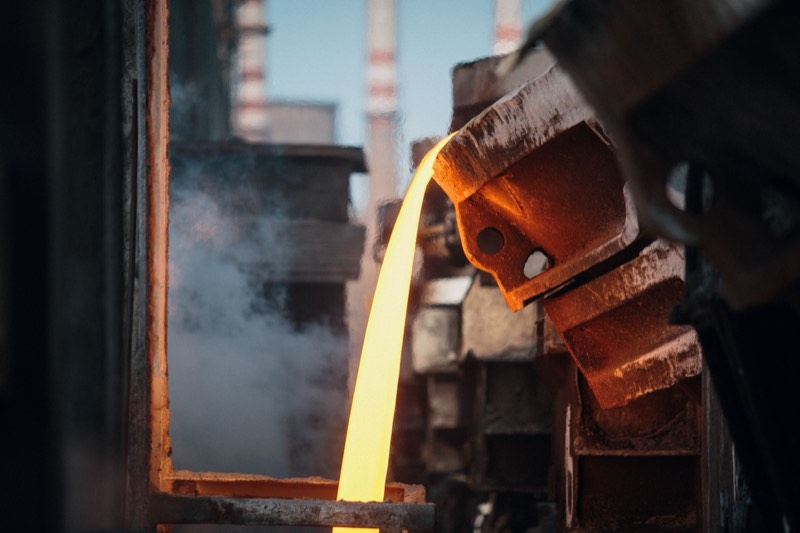
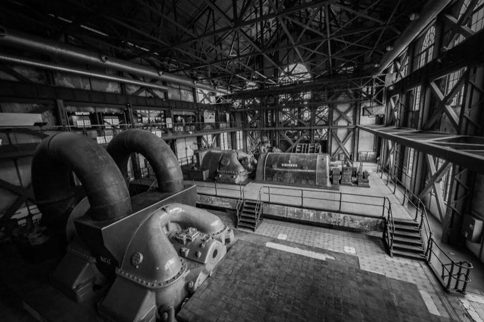
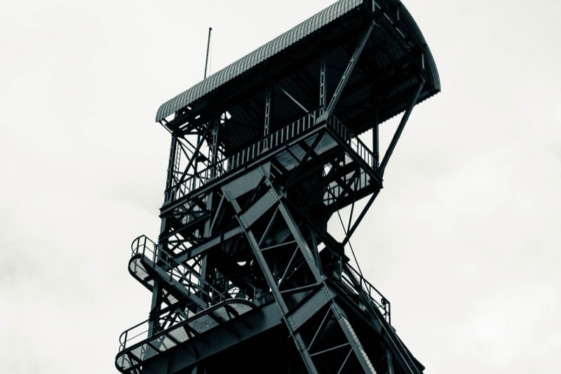

Industries
Engineering support for demanding sectors
Each industry brings its own operating conditions, risks and constraints. Here is how our services are designed to apply across four key sectors.
Sector 01
Manufacturing
Production lines depend on many machines working together. Small losses at one station can limit the output of the whole line, and maintenance has to fit around tight production schedules.

Typical engineering challenges
- Lost output from minor stops Short, frequent interruptions that add up but are rarely recorded.
- Mixed-age equipment Older mechanical plant running alongside newer automated machinery.
- Changeovers and flexibility Product changes that take time and introduce variability.
- Limited maintenance windows Pressure to keep lines running leaves little time for planned work.
How ForgePoint helps
- Plant Optimisation Bottleneck analysis and availability reviews to find where output is lost.
- Asset Reliability & Maintenance Preventive maintenance optimisation that fits around production.
- Mechanical Engineering Assessments and upgrades for ageing mechanical equipment.
- Engineering Projects Support for line modifications, installation and commissioning.
Sector 02
Energy
Energy generation and distribution rely on critical rotating equipment with long service lives. Failures can carry serious safety, environmental and supply consequences, so reliability and careful planning are essential.

Typical engineering challenges
- High-consequence equipment Pumps, fans, compressors and turbines where failure has serious impact.
- Safety and regulatory expectations Demanding requirements for risk management and documentation.
- Long asset lives Decisions on life extension, refurbishment or replacement of ageing plant.
- Planned outages Maintenance and upgrades that must be completed within fixed outage windows.
Sector 03
Mining
Mining, quarrying and bulk materials handling put equipment under heavy loads in abrasive, dusty conditions. Conveyors, crushers and screens must keep moving material reliably, often at sites where access is difficult.

Typical engineering challenges
- Severe wear Abrasive materials that shorten the life of liners, belts, idlers and wear parts.
- Heavy and variable loads Equipment operating beyond its original design duty as production changes.
- Material handling reliability Conveyor and transfer point problems that stop the whole flow of material.
- Remote and harsh sites Limited access for inspection and maintenance.
Sector 04
Process Industries
Chemical, food and drink, water and other process operations often run continuously. Unplanned stoppages can be costly and disruptive, and equipment must meet strict containment, hygiene and safety requirements.

Typical engineering challenges
- Continuous operation Little tolerance for unplanned downtime on critical process equipment.
- Varied mechanical plant Pumps, mixers, heat exchangers, vessels and associated pipework.
- Containment and hygiene Equipment that must meet demanding process and safety standards.
- Changing process duties Plant asked to run outside its original design conditions.
How ForgePoint helps
- Asset Reliability & Maintenance RCM and root cause analysis for critical process equipment.
- Plant Optimisation Throughput and availability reviews across the process.
- Mechanical Engineering Equipment assessments for changing duties.
- Engineering Projects Plant modifications, installation support and commissioning.
Let’s Engineer What’s Next.
Discuss your engineering challenges with our team.